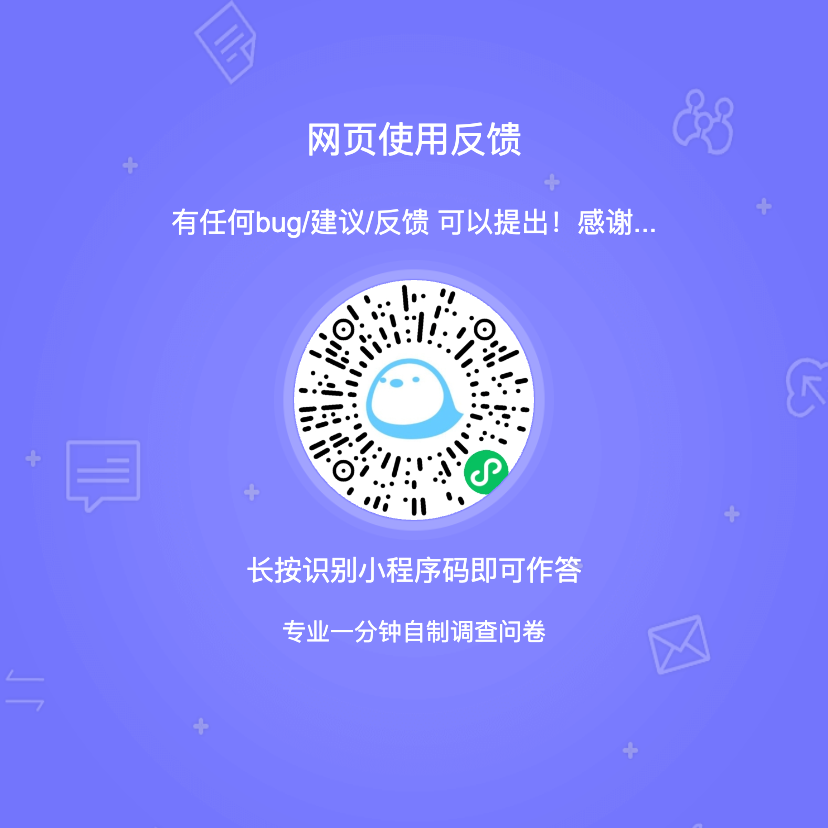

咕咕咕
版本：v0.2.2-alpha
更新日志：
2026-05-06
### 添加
- 公告系统
### 重大事件
- 没有大更新，但是因为神秘不知名因素，导致此网站整个文件从我电脑中被删除
- 从github下载之前的了 0.2.1 版本，但是原本正在做的icon文件要重做了。。
- 悲痛哀悼我失去的数据… R.I.P
—————————————————
此网站为个人创作，目前持续更新中
你可以在这里->! B站Asumu_Imp / Lofter impo 找到我
以下是网站反馈问卷调查，有任何bug/意见 都可以填写问卷，我会查看！
非常感谢每个参与测试的人！我会尽力完善这个网页的！
